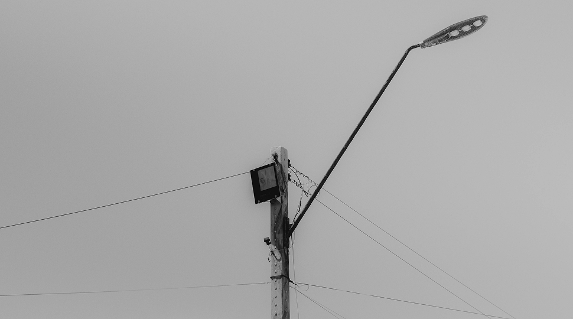
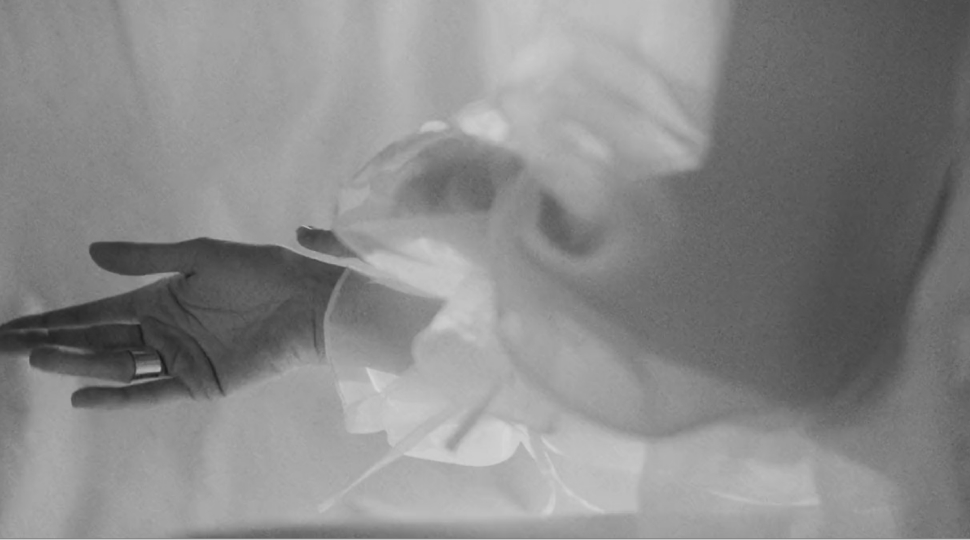

XXI Imagens do Real Imaginado
De 3 a 7 de novembro de 2025 realiza-se a 21.ª edição do Imagens do Real Imaginado - Ciclo de Fotografia, Cinema e Multimédia, organizado pela Escola Superior de Media e Artes e Design (ESMAD).


NOV 2025
O Imagens do Real Imaginado é um Ciclo de Fotografia, Cinema e Multimédia organizado pelos departamentos de Artes da Imagem e de Multimédia da Escola Superior de Media Artes e Design.
De 3 a 7 de novembro de 2025 realiza-se a 21.ª edição do Imagens do Real Imaginado - Ciclo de Fotografia, Cinema e Multimédia, organizado pela Escola Superior de Media e Artes e Design (ESMAD).
O evento, que decorrerá entre o Centro de Cultura do Politécnico do Porto, o Centro de Memória de Vila do Conde, a ESMAD e o Teatro Municipal de Vila do Conde, promove a proximidade da comunidade académica ao território e ao público, através das artes e da ciência, embalada ao som das práticas cinematográficas, fotográficas e interativas.
Desinformação é a temática desta edição. A vertigem da acessibilidade rapidamente se transformou na premência do discernimento atento perante os conteúdos que consumimos nas mais diversas plataformas. O conceito de desinformação e a sua propagação, em toda a sua complexidade, é também um apelo ao exercício da cidadania e correlata responsabilidade. É um canal inundado por riscos, onde porventura, dos maiores, será a tentação de delegar acriticamente possibilidades censórias a quem pode manobrar a elasticidade do conceito a fim de limitar o acesso ao contraditório das narrativas dominantes.
A liberdade traz labirintos e, em cantos escondidos dos mesmos, medram vírus que têm a própria como alvo a abater.
Na sua XXI edição, o Imagens do Real Imaginado – Ciclo de Fotografia, Cinema e Multimédia, adota como tema a Desinformação, colocando as artes em diálogo com as transformações ditadas por um mundo que se quer lido, sentido e refletido, mas que não raras vezes nos subtrai o tempo necessário para tal.
Inauguramos um novo capítulo na história deste ciclo, com um dia exclusivamente dedicado à investigação, não podendo deixar de destacar prestigiados convidados de relevo nas mais diversas áreas da produção artística, entre os quais Dave McKean, criador multipremiado e pioneiro no diálogo com a tecnologia – nomeado pela Apple como um dos trinta criativos mais influentes desde o lançamento do revolucionário Macintosh. Da banda desenhada ao cinema, da fotografia ao design, passando pela escrita e pela pintura, o singular e assombroso imaginário de McKean é traço inapagável dos nossos tempos. Entre a ameaça de se ver engolido pelo advento da IA e o silêncio, escolheu o diálogo e a criatividade, plasmados no seu Prompt: Conversations with AI, obra necessariamente provocadora que coloca o artista face a face com o algoritmo.
Pensemos o mundo, sintamos a arte, continuemos o caminho, com um olhar sempre crítico, com um olhar sempre vigilante.A 21.ª edição do IRI conta com o apoio dos parceiros institucionais Politécnico do Porto, Centro de Cultura do P.PORTO e Instituto de Investigação em Design, Media e Cultura (ID+) e das entidades Câmara Municipal de Vila do Conde, Câmara Municipal da Póvoa de Varzim, Crédito Agrícola e The Lince Santa Clara.
- Olívia Marques da Silva
- João Azevedo
- Vítor Quelhas
- José Alberto Pinheiro
- Luís Ribeiro
- Luís Leite
- Adriana Baptista
- Olívia da Silva
- José Quinta Ferreira
- Horácio Marques
- Filipe Lopes
- José Alberto Pinheiro
- Mafalda Ventura
- Cristina Castro
- Hugo Mesquita
- José Alberto Pinheiro
- Luís Félix
- Luís Leite
- Luís Ribeiro
- Olívia Marques da Silva
- Sérgio Rolando
- Diogo Costa
- Vítor Quelhas
- Mafalda Ventura
- Catarina Rocha
- Fernando Teixeira
- João Paulo Gomes
- Bianca Motta
- Estudantes da Licenciatura em Cinema e Audiovisual